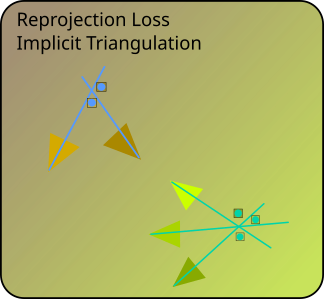
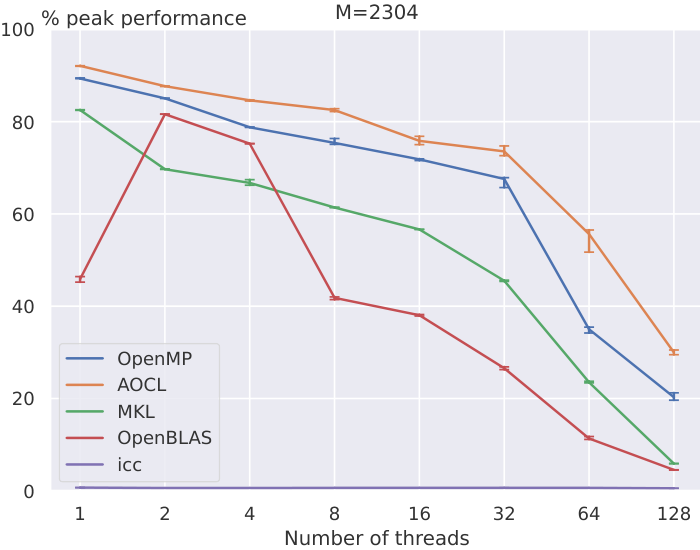
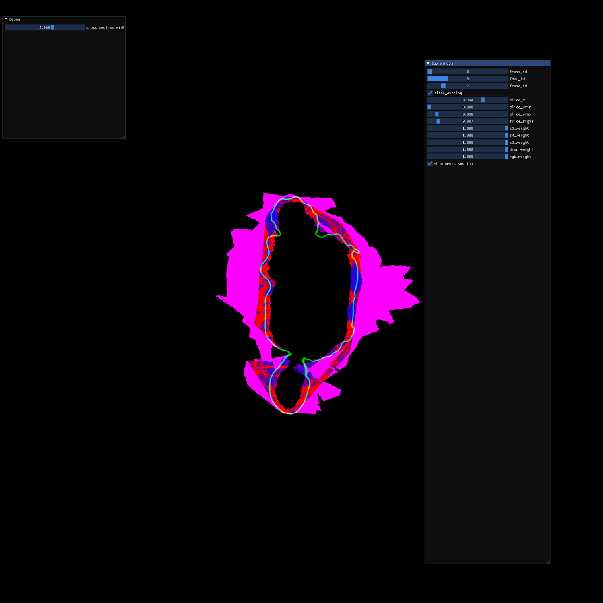
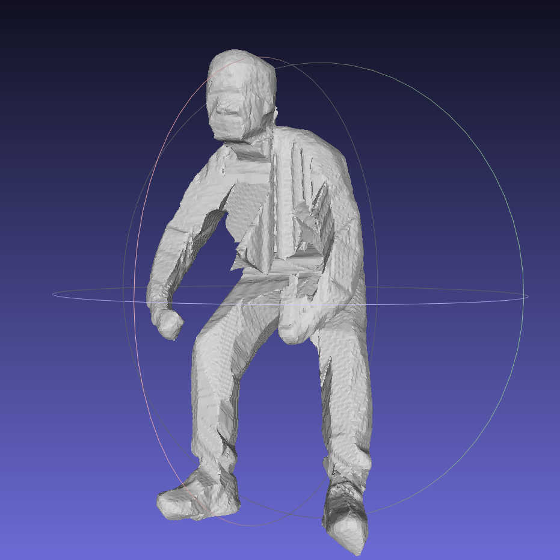
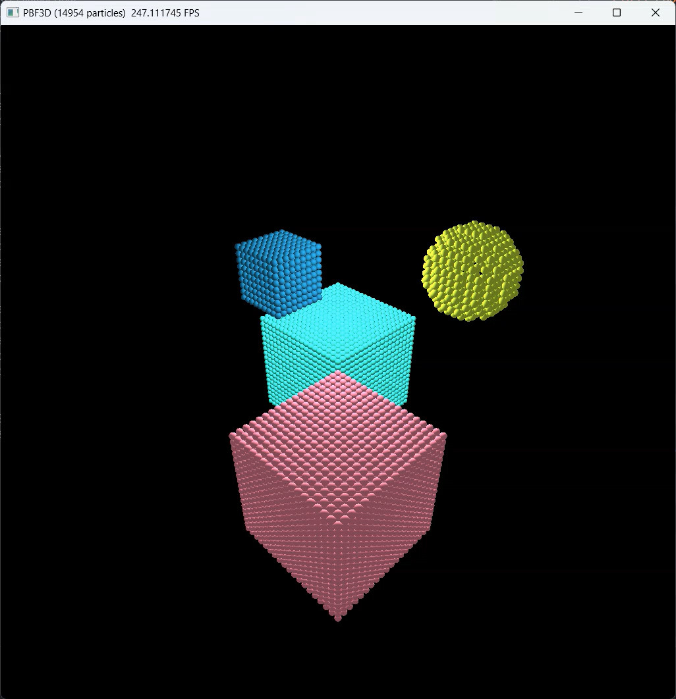
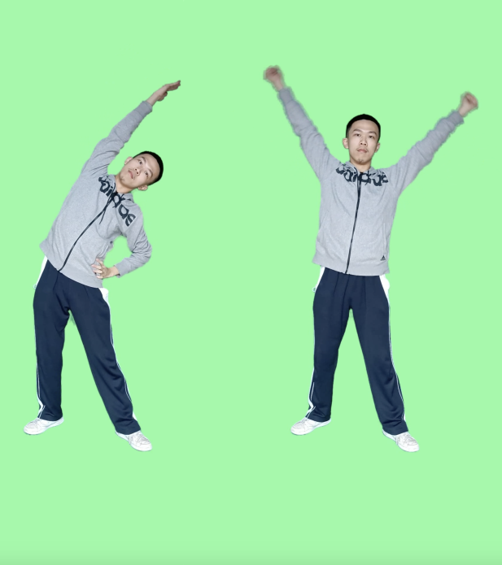

|
Xudong Jiang I am a PhD student in Computer Science at ETH Zurich. Previously, I obtained a Master's degree in Computer Science from ETH Zurich and a Bachelor's degree in Computer Science and Mathematics from The Hong Kong University of Science and Technology. Email | GitHub | Google Scholar | LinkedIn | Twitter |

|
ResearchI'm interested in computer vision and machine learning, especially in 3D vision. Currently, I am exploring how neural networks offer new possibilities for foundational problems in 3D vision and how to effectively integrate domain knowledge into these networks. |
|

|
GLACE: Global Local Accelerated Coordinate Encoding
Fangjinhua Wang*, Xudong Jiang*, Silvano Galliani, Christoph Vogel, Marc Pollefeys CVPR, 2024 project page / arXiv / code / video GLACE integrates pre-trained global and local encodings, enabling scene coordinate regression to scale to large scenes with only a single small-sized network. |


|
Robust Reflection Removal with Flash-only Cues in the Wild
Chenyang Lei*, Xudong Jiang*, Qifeng Chen TPAMI, 2023 arXiv / code Estimate optical flow to align flash and non-flash pair for robust reflection removal in the wild. Monocular depth estimation is used to synthesise realistic misalignment in training. |
Other ProjectsThese include coursework, side projects and unpublished research work. |
|

|
Parallelization of Polybench Kernels: symm and gemver
Course project of Design of Parallel and High-Performance Computing Autumn 2023, ETH Zurich report Optimize two Polybench kernels: symm (compute-bound) and gemver (memory-bound), with three programming paradigms: OpenMP, MPI, and CUDA, achieving comparable performance to SOTA implementations such as AOCL, MKL, OpenBLAS and cuBLAS. |
|

|
Explicit Representation for Human Reconstruction
Student project at AIT Lab Summer 2023, ETH Zurich Refine coarse mesh with variational refinement. Optimize integration of photoconsistency cost under silhouette constraints with efficient GPU Monte Carlo integration on sparse voxels around the mesh. |
|

|
Implicit Representation for Human Reconstruction
Course project of Machine Perception Spring 2023, ETH Zurich Fast human reconstruction with implicit representation (Ranked top 3 in class). Utilize silhouette carving, depth prior, and importance sampling for fast and accurate reconstruction. Extract mesh with low bias by depth rendering and TSDF fusion |
|

|
Real-time Position Based Fluid Simulation
Course project of Physically-Based Simulation in Computer Graphics Autumn 2022, ETH Zurich Implemented Position Based Fluid Simulation with Taichi. Simulate multi-phase fluid and fluid-solid interactions with 20k particles in real-time on RTX3080Ti. |
|

|
Everybody Dance Together: Multi-person Motion Transfer
Final Year Project 2022, HKUST Multi-person motion transfer by generating masked videos and alpha compositing them. Utilized coarse masks to reconstruct the background and obtain fine masks with background matting. |
|
Thank Dr. Jon Barron for sharing the source code of his personal page. |